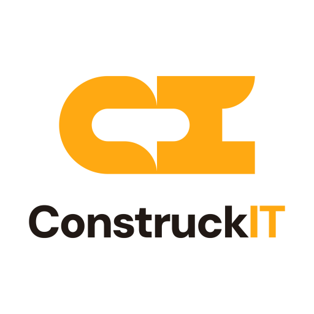
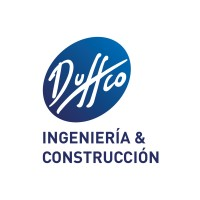
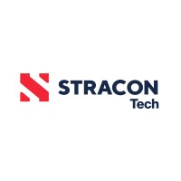
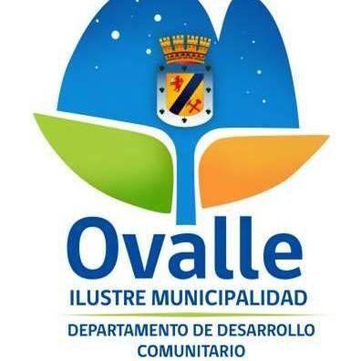
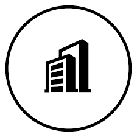

Tamara
Ossandón
Diseño y construyo software que convierte procesos complejos en productos claros, útiles y escalables.
Construyo
Plataformas web, apps móviles, automatización y cloud para equipos en terreno, oficina y gerencia.
Sobre mí
Quién soy
Me gusta construir software que resuelva problemas concretos. He trabajado en proyectos donde no basta con que la aplicación funcione: también tiene que ser clara, usable, confiable y útil para personas que trabajan en terreno, oficinas y áreas operativas.
Combino desarrollo full-stack, automatización y cloud para transformar procesos manuales en herramientas digitales simples de usar y fáciles de mantener. Ingeniera civil en computación (UCN).
Antes de programar, me importa entender el flujo, escuchar a quienes lo viven y definir qué tiene que mejorar de verdad. Después diseño la solución y la llevo a producción: backend, frontend, móvil y despliegue en cloud.
Me importa que el software se use, no solo que funcione.
Proyectos
Experiencia
Proyectos donde el software se usa de verdad en el día a día

ConstruckITSuite multiempresa para operación en obra
ConstruckIT comercializa un SaaS multi-tenant en producción para operación en obra.
Participé en el diseño y desarrollo: arquitectura multi-tenant, API en Laravel, panel con Inertia, app React Native con cola offline, RBAC, módulos de reportes, combustible y mantención, y despliegues en Cloud Run.
SaaS en producción, con uso diario en campo y administración por varias empresas.

DuffcoPlataforma web y móvil para constructoras
En obra, mucha información seguía en planillas, WhatsApp y registros sueltos.
SaaS web y móvil offline first para terreno: registro operativo, alertas de fugas y consumo anómalo de combustible, cobros automatizados, costos por obra y maquinaria, cruce de datos, informes y gráficos para gerencia, y aprobaciones por rol.
Menos Excel y pérdidas por combustible, con operación, cobros y costos más visibles para terreno y gerencia.

Stracon TechAutomatización de pases de visita a faena
Pedir un pase de visita era lento y dependía de muchos pasos manuales.
App en Microsoft Teams con flujos de aprobación automatizados y reglas según el perfil del solicitante.
Tiempos de gestión mucho menores y más autonomía para quienes solicitan el ingreso.
Asistente en Microsoft Teams
La información útil estaba repartida entre Planner, Outlook y documentos internos.
Bot en Copilot Studio conectado a Microsoft Graph, con diálogos pensados para consultas del equipo.
Consultas más rápidas sin salir de Teams.

DEME‑commerce con microservicios
La tienda online necesitaba crecer con pagos seguros y servicios independientes entre sí.
Backend en microservicios con Transbank, mensajería asíncrona y APIs documentadas.
Base modular lista para sumar catálogo, tráfico y nuevos servicios.
Portal de ofertas laborales y candidatos
Revisar CV y seguir postulaciones tomaba demasiado tiempo y era difícil de ordenar.
Portal privado con paneles, indicadores y lectura automatizada de currículums.
Screening más ágil y mejor seguimiento por cada convocatoria.
Herramienta web — Test de Zulliger
Interpretar el test implicaba buscar a mano terminología e imágenes de referencia.
Aplicación web con seguimiento de pacientes e imágenes que se actualizan según los códigos del test.
Análisis más rápido y evaluaciones más consistentes para el equipo psicológico.

AgroFamilySistema de inventario y ventas
Stock y ventas se manejaban sin una vista clara para decidir a tiempo.
Software de escritorio con caja, alertas de stock y reportes económicos.
Mejor control del inventario y decisiones con datos al día.
Reportes y datos para operación minera
Los datos de movimiento de materiales costaba consolidarlos y sacar reportes útiles.
Plataforma con ETL, KPIs, exportación a Excel y perfiles admin y usuario.
Reportes al día y menos trabajo manual para el equipo de operación.
Tecnologías
Lo que uso en producción
Herramientas con las que he construido y desplegado proyectos reales
Stack en producción
Pasa el cursor sobre cada tarjeta para ver el contexto
No hay tecnologías en esta categoría.
Idiomas: Español (nativo) · Inglés (intermedio)
Disponible
¿Conversamos?
Cuéntame qué tienes en mente — un rol, un proyecto o una idea — y vemos cómo darle forma juntos.